Seis semanas para aprender, practicar y prepararte para la certificación.
Bienvenidos a KrakeDev
02Aprender para aprobar. Aprender para aplicar.Nuestro propósito
03La clase en vivo es para participarCómo aprenderemos
04Participa en vivo. Refuerza a tu ritmo.Tu compromiso
0510 módulos · 6 semanasRuta de aprendizaje
06Así será tu AWS AIF-C01El examen
07Tu certificación anterior puede ayudarteCosto y beneficio
08Un compromiso para estas 6 semanas¿Listos?